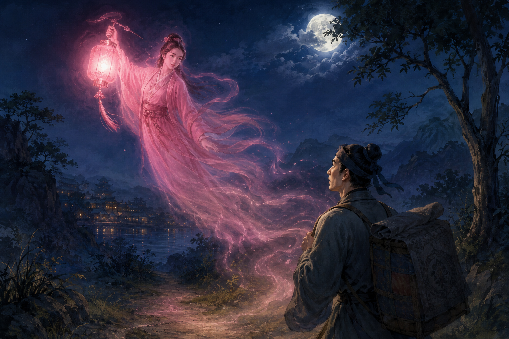
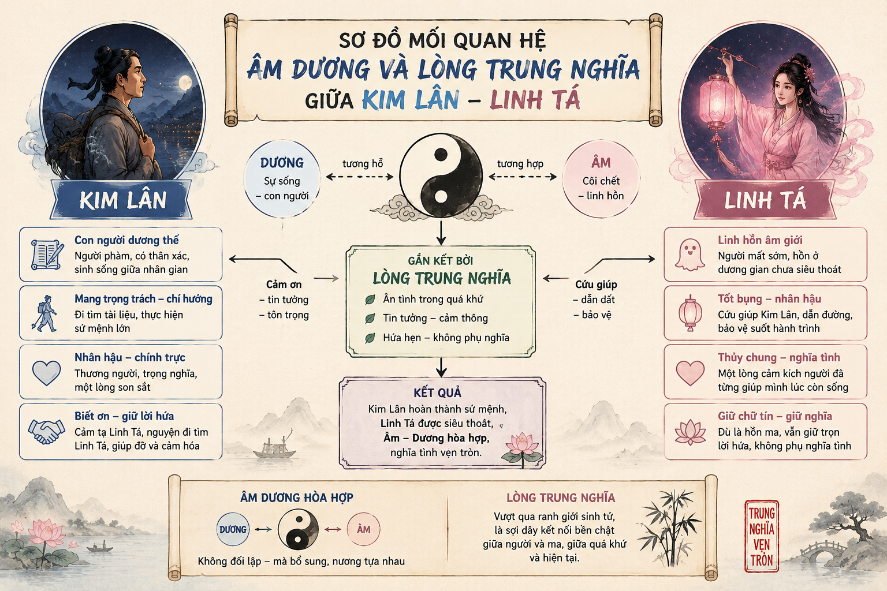

I TRI THỨC ĐỌC HỂU & TÓM TẮT VĂN BẢN
1 Giới thiệu tác phẩm và Tích truyện Tuồng "Sơn Hậu"
Khái niệm & Nguồn gốc: Sơn Hậu là vở tuồng cổ mẫu mực, ra đời từ khoảng giữa thế kỷ XVIII, chưa rõ tác giả, được nhiều nhà soạn tuồng nổi tiếng như Đào Tấn, Nguyễn Hiền Dĩnh tham gia chỉnh lý.
Tóm tắt tích truyện: Vua Tề băng hà, gian thần Tạ Thiên Lăng cướp ngôi, tống giam Phàn Thứ Phi đang mang thai. Các trung thần (Nguyệt Hạo, Tử Trình, Đổng Kim Lân, Khương Linh Tá) quyết cứu Phàn Thứ Phi và Hoàng tử mới sinh. Trên đường trốn chạy, Khương Linh Tá cản đường quân gian thần và bị Tạ Ôn Đình chém rơi đầu. Hồn Linh Tá hóa thành ngọn đèn hồng đưa đường cho Kim Lân phò trợ Hoàng tử về thành Sơn Hậu an toàn.

Hình 1: Tranh minh họa cảnh Hồn Linh Tá hóa thành ngọn đèn hồng dẫn đường cho Đổng Kim Lân trong đêm (File: h1.png)
2 Sự khác biệt giữa Tuồng Cung Đình và Tuồng Dân Gian
| Tiêu chí | Tuồng Cung Đình (Ví dụ: Sơn Hậu) | Tuồng Dân Gian (Ví dụ: Nghêu, Sò, Ốc, Hến) |
|---|---|---|
| Ngôn ngữ | Trang trọng, sử dụng nhiều từ Hán-Việt, điển tích, điển cố, câu từ bi tráng, đăng đối. | Gần gũi với lời ăn tiếng nói hàng ngày, giàu tính khẩu ngữ, hài hước, châm biếm. |
| Đề tài & Nhân vật | Triều đình, vua tôi, trung - nịnh, anh hùng xả thân vì nghĩa lớn. | Sinh hoạt làng xã, các thói hư nết xấu của quan lại tầng lớp dưới. |
| Âm hưởng chính | Bi hùng, cao cả, hào hùng. | Hài hước, trào lăm, châm biếm. |
II NỘI DUNG VÀ TÍNH CHẤT TRỌNG TÂM CỦA ĐOẠN TRÍCH
📌 Định nghĩa & Phát biểu tính chất nghệ thuật:
Đoạn trích thể hiện chất bi hùng đỉnh cao của sân khấu tuồng truyền thống. Sự hy sinh của Khương Linh Tá không làm cho không khí suy sụp mà trái lại nâng cao tinh thần kiên trung. Lời thề "Đoạn thệ" và hình ảnh "Hồn Linh Tá biến thành ngọn đèn đưa Kim Lân" là biểu tượng của tinh thần trung nghĩa bất tử, vượt qua ranh giới âm dương \(\xrightleftharpoons\) giữa sự sống và cái chết.

Hình 2: Sơ đồ mối quan hệ âm dương và lòng trung nghĩa giữa Kim Lân - Linh Tá (File: h2.png)
III VÍ DỤ VÀ CÂU HỎI PHÂN TÍCH TRONG BÀI
Ví dụ 1: Phân tích ý nghĩa câu thoại của Khương Linh Tá: "Thủ cấp lưu tại thử / Công hà nhật tấn công"
- Dịch nghĩa: "Đầu còn giữ ở đây / Biết ngày nào mới được mai táng chu toàn".
- Phân tích: Dù đã bị chém rơi đầu ("thủ cấp lưu tại thử"), Linh Tá vẫn không bận tâm đến bản thân mà chỉ đau đáu nhiệm vụ phò trợ Hoàng tử và tiếc nuối vì chưa thể cùng Đổng Kim Lân hoàn thành đại nghiệp. Điều này thể hiện trọn vẹn tinh thần "chí trung", xả thân vì nước.
Ví dụ 2: Thành ngữ "biệt Sâm Thương" trong câu "Thuỳ tri nhất đán biệt Sâm Thương" có ý nghĩa gì?
- Sâm và Thương là tên hai chòm sao trên bầu trời (sao Sâm ở phía Tây, sao Thương ở phía Đông), không bao giờ xuất hiện cùng một lúc.
- Ý nghĩa: Ẩn dụ cho sự chia ly vĩnh viễn, xa cách âm dương giữa hai người anh em kết nghĩa Đổng Kim Lân và Khương Linh Tá.
IV HOẠT ĐỘNG NÊU VẤN ĐỀ VÀ CÂU HỎI KHÁM PHÁ
❓ Câu hỏi khám phá: Sự xuất hiện của yếu tố kì ảo (hồn ma hóa đèn) có làm giảm tính chân thực của kịch bản tuồng không?
✋ Hoạt động nhóm: So sánh ngôn ngữ tuồng Sơn Hậu và tuồng Nghêu, Sò, Ốc, Hến
Hãy đọc lại hai đoạn trích và thảo luận về giọng điệu, từ ngữ được sử dụng trong mỗi vở tuồng.
1. Liệt kê các từ Hán-Việt trong Sơn Hậu (vd: hiền hữu, sa cơ, đoạn thệ, phù bật, vị quốc gia chỉ đại nghĩa) \(\rightarrow\) Giọng điệu bi tráng, tôn nghiêm.
2. Tìm các câu thoại bình dân trong Nghêu Sò Ốc Hến \(\rightarrow\) Giọng điệu suồng sã, giễu cợt.
3. Rút ra kết luận: Ngôn ngữ phục vụ trực tiếp cho mục đích phản ánh (Tuồng cung đình ca ngợi trung nghĩa; Tuồng dân gian phê phán thói xấu).
💡 em có biết
Trong nghệ thuật biểu diễn tuồng cổ, nhân vật Khương Linh Tá sau khi bị chém đầu thường thực hiện động tác xướng thoại đặc biệt kết hợp với kỹ thuật vũ đạo "hóa đèn" tinh tế. Diễn viên sử dụng ánh sáng ngọn đèn hồng trên tay cùng bước đi linh hoạt để tạo nên không khí huyền bí, thiêng liêng trên sân khấu mà không cần đến công nghệ hiện đại.
🚀 em có thể
Tự mình nhập vai và diễn xướng một đoạn thoại ngắn trong tác phẩm Sơn Hậu (ví dụ đoạn Đổng Kim Lân khóc bạn hoặc đoạn Hồn Linh Tá hiến hiện). Việc đóng vai sẽ giúp bạn cảm nhận sâu sắc hơn nhịp điệu đăng đối và khí thế bi hùng của văn học kịch truyền thống.
⚠️ LƯU Ý
Khi đọc kịch bản tuồng cổ, cần lưu ý đến các chỉ dẫn sân khấu ghi trong ngoặc đơn như (Ban), (Hát nam), (Hạ)... Đó là những hướng dẫn dành cho diễn viên chuyển điệu hát hoặc chuyển động tác biểu diễn, giúp việc hình dung không gian sân khấu được chính xác hơn.
VI CỦNG CỐ VÀ BÀI TẬP ĐÁNH GIÁ
🎮 GAMESHOW: AI LÀ TRIỆU PHÚ
Trả lời 10 câu hỏi để kiểm tra kiến thức bài học!
✍️ BÀI TẬP TỰ LUẬN & PHÂN TÍCH
Bài 1 (Phân tích nghệ thuật): Phân tích chi tiết tác dụng của ngôn ngữ Hán-Việt trong việc thể hiện chất bi hùng của kịch bản tuồng Sơn Hậu qua 4 câu thơ:
"Kì ba linh lạc trường lưu thuỷ,
Kinh phá như hà đắc đoàn viên.
Thống thiết các can tràng đoạn đoạn,
Sầu đê mê ngọc lệ sái uông uông."
- Sử dụng từ Hán Việt cổ: Kì ba linh lạc (hoa lạ trôi nổi), kinh phá (kinh thành bị tàn phá), can tràng đoạn đoạn (gan ruột bị cắt đứt từng khúc), ngọc lệ sái uông uông (nước mắt chảy ròng ròng).
- Tác dụng: Tạo không khí cổ kính, trang nghiêm và làm tăng sắc thái bi tráng của nỗi đau. Nỗi đau của Kim Lân không chỉ là nỗi đau cá nhân mà gắn liền với vận mệnh quốc gia triều đại, thể hiện nhân cách cao cả của người anh hùng.
Bài 2 (So sánh tổng hợp): Từ bài học, hãy lập sơ đồ so sánh tư tưởng "Nghĩa vua tôi, tình huynh đệ" trong Tuồng Sơn Hậu với lý tưởng nhân nghĩa của Nguyễn Trãi trong Bình Ngô đại cáo.
- Điểm tương đồng: Đều đề cao "Đại nghĩa" và lòng trung thành với đất nước, sẵn sàng hy sinh lợi ích cá nhân vì sự bình yên của nhân dân và cơ nghiệp quốc gia.
- Điểm khác biệt:
+ Trong Tuồng Sơn Hậu: Lý tưởng trung quân gắn bó chặt chẽ với tình huynh đệ chí thiết giữa các tướng lĩnh (Kim Lân - Linh Tá), đậm chất trung cổ lãng mạn bi hùng.
+ Trong Bình Ngô đại cáo: Lý tưởng nhân nghĩa nâng lên thành tư tưởng "Yên dân", "Trừ hại", vì nhân dân toàn thiên hạ.